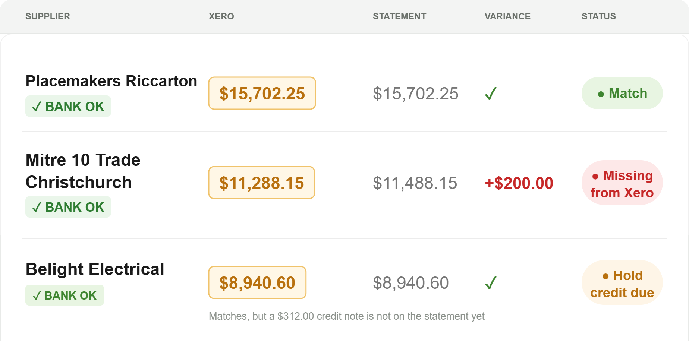
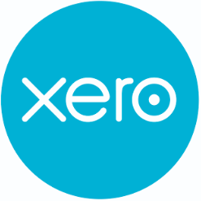
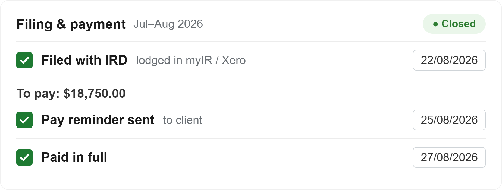
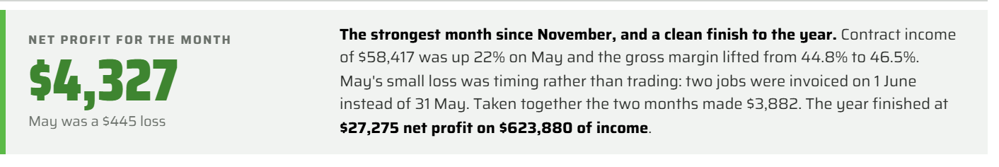

Admin for Tradies is Monique Clow, a Canterbury bookkeeper working with small to medium trade businesses. Her approach has always been the same: bring structure, process and efficiency to Xero, payroll and job software. All of it built on the relationship and the trust that good bookkeeping depends on.
You get an experienced trade bookkeeper who checks the month, notices when something is not right and fixes it in the right period. All at bookkeeper rates, not accountant rates.



Bank reconciliation · GST · Payables · Payroll. The books done properly every week or month, plus the automation and efficiency work most bookkeepers skip.
+From $75 + GST an hour. Outsource to me as your bookkeeping manager.

A one-off look through your Xero or your payroll, with a plain-English report of findings, fixes and automation ideas.
+Xero Health & Automation Check from $325 + GST. Payroll Health Check from $275 + GST.
See the health checks →Looking at job software, or wanting to know what each job actually made? Get in touch for a conversation.
+Pricing follows the chat, once I know your set up.
The full monthly check: supplier statements against Xero before you pay, GST checked before it is filed and a two-page performance report tailored to your business.
+
From $245 + GST a month, one flat service.
See Tradie Month End →I will tell you how I can help.
Email or ring 0275 895 895
Try the Supplier Statement Checker. One of the tools I built and use every month. Demo data, interactive tool.
Try the checker →Bookkeeping is the foundation of Admin for Tradies and mentoring is my extension. Monique has been a volunteer for Business Mentors NZ for seven years and now offers a two-hour paid service to solve a key bottleneck or frustration faced by small tradies. Exploring Tradie sums up this service and offers free tools you can download, and a book to help you understand Kaizen (the original term for continuous improvement). Take a look.
Four taps and you have one Kaizen tool to try for two weeks, a prompt for your own AI and a page to print.
Take the four taps →
Download this free little book to help you solve frustrations, bottlenecks and a lack of delegation in your business. Great for those starting to implement systems and scale their business.
Download the PDF → ✉Once a month, from the trenches. What I see in small trade businesses, what I'm building with AI, one link worth your time.
Sign up →Reading on your phone? The book also works in your browser.
Admin for Tradies is built to cater to small and medium trade and service businesses. Tools that make the checking feasible, Monique answering the phone and email. Structured reporting and payroll, always processed on time.
For medium accounts a contractor can be used to assist on the day-to-day tasks. Local and experienced. We can discuss what that looks like. This is important to ensure your work is always done in a timely manner.
For large tradies wanting a backup for their in-house bookkeeper, Monique is ideal. Think month end checks, training to automate Xero, AI consults to improve back costing and more.
I love being in your books, at least weekly, and being in touch with what is happening in your business. You ring or email and I answer.
Monique Clow, Owner
The Statement Checker and the P&L + GST Checker were written by me, on real trade books.

Based in Prebbleton, working across Christchurch, Selwyn and NZ wide.
I work closely with local accountants and value that relationship.

“My painting business is too small to hire a full-time office person and too big to not have one. Since Monique came on board I know my business is running properly now.”
 Richard GradyDirector, The Painters
Richard GradyDirector, The Painters
“Monique keeps things simple. If something is going to cost me time Monique finds a way to reduce it. Honest, straightforward. Gets how a builder works.”
 Sam HemapoDirector, Hemopo Builders
Sam HemapoDirector, Hemopo Builders
“Monique has made our finance admin so much easier and reliable. She picks up our little errors before they become big ones and makes sure everything is reconciled. Wouldn't go back!”
 Martin LeeDirector, Bright Smiles Christchurch
Martin LeeDirector, Bright Smiles Christchurch
Tell me a bit about the business and I will ring you back.
The Monthly Exploring Tradie newsletter. What I see in small trade businesses, one Kaizen tool used properly, what I am building with AI.
Sign up →
Small and medium trade businesses are family businesses. The owner still on the tools and perhaps someone at home doing the books at night. I work directly with the owner and their staff, at the coal face where the job, the bills and the GST actually happen. That is where I am good and it is where I make a difference: helping a family business run better. Admin for Tradies and Exploring Tradie are the vehicle for that. I use a contractor for assistance on the day-to-day work required on medium accounts.
The calm side of the ship. The world is not slowing down: more information, more choice, AI moving faster every month and an economy nobody feels settled in. My job is to keep your systems, your numbers and your technology steady, suitable and a step ahead and to bring you something new only when it is actually worth a small and medium trade business having. You get on with the trade. Change reaches you one small step at a time, not as a wave.
Monique Clow · 14 years in the books · former trade business co-owner · Master in Business, Diploma in Lean Systems, Diploma in Accounting · Business Mentors NZ volunteer
More about Monique →Try this. Ask your own AI about me. Download the briefing pack and ChatGPT, Claude, Copilot or Gemini can talk you through what I do, what it costs and whether I am a fit for your business.
Download the AI briefing packTwenty minutes and last month's Xero. Tell me what is causing the grief and I will tell you honestly which product fits, or whether you need one at all. No pitch, no obligation.
Name, email, one line about the books. I will come back to you within a working day.
Or ring 0275 895 895